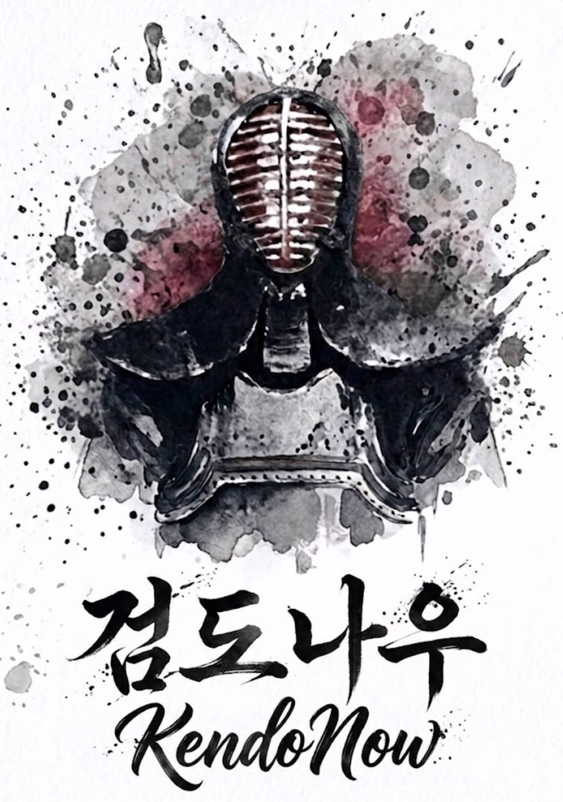
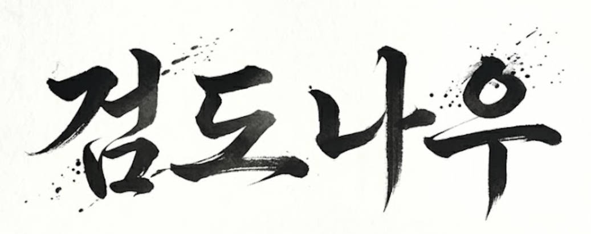

더 편리한 검도를 위하여
안녕하세요. 처음 인사드립니다. 검도나우입니다.
아직 짧은 검력에 일천한 실력이지만 검도를 사랑하는 마음에 부족한 웹사이트를 만들었습니다.
검도를 하며 가장 불편했던 부분 중 하나는 대회 일정을 통합 관리하는 페이지가 없어 각 지역별 검도회나 도장을 통해서 대회 일정을 찾아야 한다는 점이었습니다. 이 불편함에 대해 호소하는 다른 동호인분들이 생각보다 많다는 점을 알게 되었습니다.
그래서 조금이라도 더 편리한 검도 생활을 위해 작은 발걸음을 떼어 봅니다.
검도나우가 하는 일
검도나우는 아주 심플한 웹사이트입니다.
각 월별 대회 일정을 공유하고, 연간 대회 일정을 확인할 수 있습니다.
그리고 운영자가 가끔씩 시시콜콜한 글들을 아티클 페이지에 업로드할 생각입니다. 앞서 언급했듯 운영자의 검력이 일천하여 거진 국내외 소식이나 공부를 위해 찾아본 별로 중요할 것 없는 내용이 될 듯 하지만, 본디 글 쓰는 것을 좋아하는지라 제 욕심에 만든 페이지입니다.
추후에 좋은 아이디어나 계획이 생기면 추가해 보겠으나 기본적으로 검도나우의 용도는 대회 일정 조회입니다.

기타 문의나 대회 일정 공유는 bytechne39@gmail.com으로 부탁드립니다.